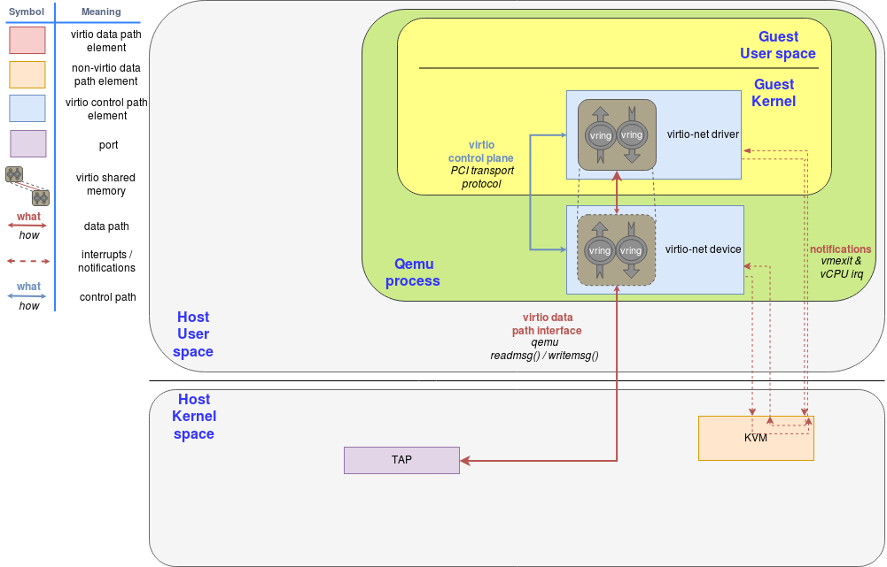
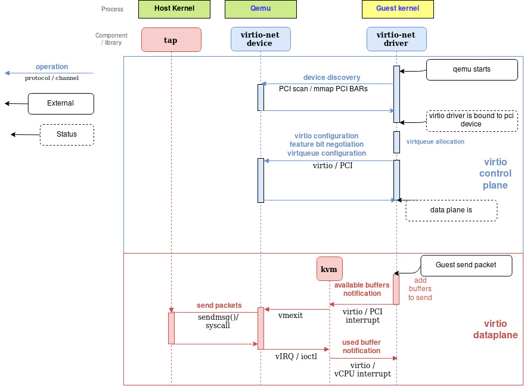
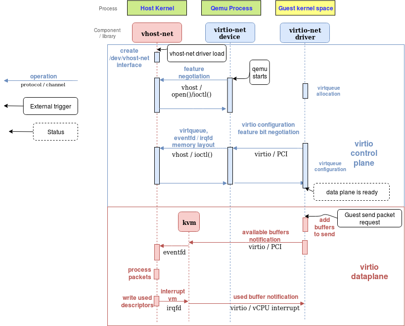
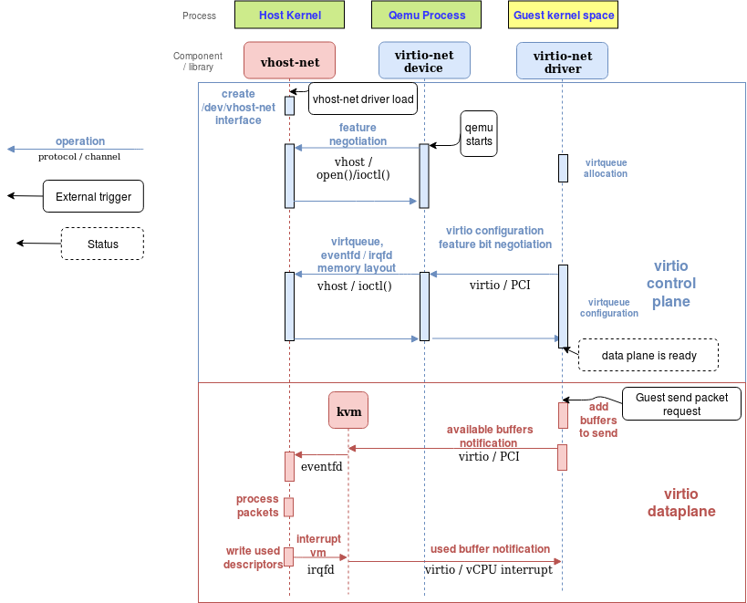
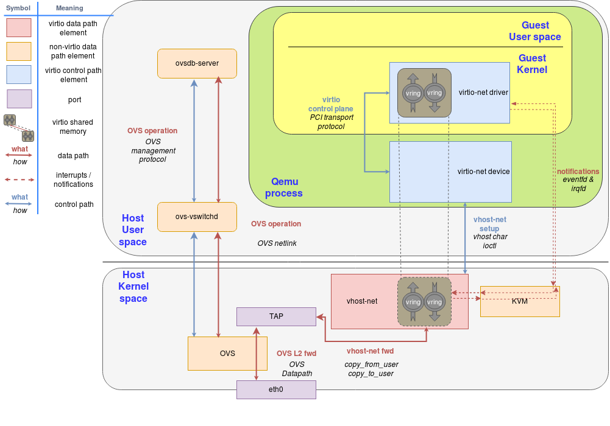

Deep dive into Virtio-networking and vhost-net¶
Copy from https://www.redhat.com/en/blog/deep-dive-virtio-networking-and-vhost-net
In this post we will explain the vhost-net architecture described in the introduction, to make it clear how everything works together from a technical point of view. This is part of the series of blogs that introduces you to the realm of virtio-networking which brings together the world of virtualization and the world of networking.
This post is intended for architects and developers who are interested in understanding what happens under the hood of the vhost-net/virtio-net architecture described in the previous blog.
We’ll start by describing how the different virtio spec standard components and shared memory regions are arranged in the hypervisor, how QEMU emulates a virtio network device and how the guest uses the open virtio specification to implement the virtualized driver for managing and communicating with that device.
After showing you the QEMU virtio architecture we will analyze the I/O bottlenecks and limitations and we will use the host’s kernel to overcome them, reaching the vhost-net architecture presented in the overview post (link).
Last, but not least, we will show how to connect the virtual machine to the external word, beyond the host it’s running on, using Open Virtual Switch (OVS), an open source virtual, SDN-capable, distributed switch.
By the end of this post, you’ll be able to understand how the vhost-net/virtio-net architecture works, the purpose of each of its components and how packets are sent and received.
Previous Concepts¶
In this section we will briefly explain a few concepts that you need to know in order to fully understand this post. It might seem basic for the well-versed in the matter, but it will provide a common foundation to build on.
Networking¶
Let’s start with the basics. A physical NIC (Network Interface Card) is the hardware (real) component that allows the host to connect to the external world. It can perform some offloading, like performing a checksum calculation in the NIC instead of the CPU, Segmentation Offload (fragment a larger piece of data into small chunks, like ethernet MTU size) or Large Receive Offload (join many received packets’ data into only one for the CPU point of view).
On the other side we have tun/tap devices, virtual point-to-point network devices that the userspace applications can use to exchange packets. The device is called a tap device when the data exchanged is layer 2 (ethernet frames), and a tun device if the data exchanged is layer 3 (IP packets).
When the tun kernel module is loaded it creates a special device /dev/net/tun. A process can create a tap device opening it and sending special ioctl commands to it. The new tap device has a name in the /dev filesystem and another process can open it, send and receive Ethernet frames.
IPC, System programming¶
Unix sockets are a way to do Inter-Process Communication (IPC) on the same machine in an efficient way. In this post scope, the server of the communication binds a Unix socket to a path in the file system, so a client can connect to it using that path. From that moment, the processes can exchange messages. Note that unix sockets can also be used to exchange file descriptors between processes.
An eventfd is a lighter way of performing IPC. While Unix sockets allows to send and receive any kind of data, eventfd is only an integer that a producer can change and a consumer can poll and read. This makes them more suitable as a wait/notify mechanism, rather than information passing.
Both of these IPC systems expose a file descriptor for each process in the communication. The fcntl call performs different operations on that file descriptors, as making them non-blocking (so a read operation returns immediately if there is nothing to read). The ioctl call follows the same pattern, but implementing device-specific operations, like sending commands.
Shared memory is the last method of IPC we will cover here. Instead of providing a channel to communicate two process, it makes some of the processes’ memory regions point to the same memory page, so the change that one process writes over it affects the subsequent reads the other make.
QEMU and device emulation¶
QEMU is a hosted virtual machine emulator that provides a set of different hardware and device models for the guest machine. For the host, qemu appears as a regular process scheduled by the standard Linux scheduler, with its own process memory. In the process, QEMU allocates a memory region that the guest see as physical, and executes the virtual machine’s CPU instructions.
To perform I/O on bare metal hardware, like storage or networking, the CPU has to interact with physical devices performing special instructions and accessing particular memory regions, such as the ones that the device is mapped to.
When the guests access these memory regions, control is returned to QEMU, which performs the device’s emulation in a transparent manner for the guest.
KVM¶
Kernel-based Virtual Machine (KVM) is an open source virtualization technology built into Linux. It provides hardware assist to the virtualization software, using built-in CPU virtualization technology to reduce virtualization overheads (cache, I/O, memory) and improving security.
With KVM, QEMU can just create a virtual machine with virtual CPUs (vCPUs) that the processor is aware of, that runs native-speed instructions. When a special instruction is reached by KVM, like the ones that interacts with the devices or to special memory regions, vCPU pauses and informs QEMU of the cause of pause, allowing hypervisor to react to that event.
In the regular KVM operation, the hypervisor opens the device /dev/kvm, and communicates with it using ioctl calls to create the VM, add CPUs, add memory (allocated by qemu, but physical from the virtual machine’s point of view), send CPU interrupts (as an external device would send), etc. For example, one of these ioctl runs the actual KVM vCPU,, blocking QEMU and making the vCPU run until it found an instruction that needs hardware assistance. In that moment, the ioctl returns (this is called vmexit) and QEMU knows the cause of that exit (for example, the offending instruction).
For special memory regions, KVM follows a similar approach, marking memory regions as Read Only or not mapping them at all, causing a vmexit with the KVM_EXIT_MMIO reason.
The virtio specification¶
Virtio specification: devices and drivers¶
Virtio is an open specification for virtual machines’ data I/O communication, offering a straightforward, efficient, standard and extensible mechanism for virtual devices, rather than boutique per-environment or per-OS mechanisms. It uses the fact that the guest can share memory with the host for I/O to implement that.
The virtio specification is based on two elements: devices and drivers. In a typical implementation, the hypervisor exposes the virtio devices to the guest through a number of transport methods. By design they look like physical devices to the guest within the virtual machine.
The most common transport method is PCI or PCIe bus. However, the device can be available at some predefined guest’s memory address (MMIO transport). These devices can be completely virtual with no physical counterpart or physical ones exposing a compatible interface.
The typical (and easiest) way to expose a virtio device is through a PCI port since we can leverage the fact that PCI is a mature and well supported protocol in QEMU and Linux drivers. Real PCI hardware exposes its configuration space using a specific physical memory address range (i.e., the driver can read or write the device’s registers by accessing that memory range) and/or special processor instructions. In the VM world, the hypervisor captures accesses to that memory range and performs device emulation, exposing the same memory layout that a real machine would have and offering the same responses. The virtio specification also defines the layout of its PCI Configuration space, so implementing it is straightforward.
When the guest boots and uses the PCI/PCIe auto discovering mechanism, the virtio devices identify themselves with with the PCI vendor ID and their PCI Device ID. The guest’s kernel uses these identifiers to know which driver must handle the device. In particular, the linux kernel already includes virtio drivers.
The virtio drivers must be able to allocate memory regions that both the hypervisor and the devices can access for reading and writing, i.e., via memory sharing. We call data plane the part of the data communication that uses these memory regions, and control plane the process of setting them up. We will provide further details on the virtio protocol implementation and memory layout in future posts.
The virtio kernel drivers share a generic transport-specific interface (e.g: virtio-pci), used by the actual transport and device implementation (such as virtio-net, or virtio-scsi).
Virtio specification: virtqueues¶
Virtqueues are the mechanism for bulk data transport on virtio devices. Each device can have zero or more virtqueues (link). It consists of a queue of guest-allocated buffers that the host interacts with either by reading them or by writing to them. In addition, the virtio specification also defines bi-directional notifications:
Available Buffer Notification: Used by the driver to signal there are buffers that are ready to be processed by the device
Used Buffer Notification: Used by the device to signal that it has finished processing some buffers.
In the PCI case, the guest sends the available buffer notification by writing to a specific memory address, and the device (in this case, QEMU) uses a vCPU interrupt to send the used buffer notification.
The virtio specification also allows the notifications to be enabled or disabled dynamically. That way, devices and drivers can batch buffer notifications or even actively poll for new buffers in virtqueues (busy polling). This approach is better suited for high traffic rates.
In summary, the virtio driver interface exposes:
Device’s feature bits (which device and guest have to negotiate)
Status bits
Configuration space (that contains device specific information, like MAC address)
Notification system (configuration changed, buffer available, buffer used)
Zero or more virtqueues
Transport specific interface to the device
Networking with virtio: qemu implementation¶
The virtio network device is a virtual ethernet card, and it supports multiqueue for TX/RX. Empty buffers are placed in N virtqueues for receiving packets, and outgoing packets are enqueued into another N virtqueues for transmission. Another virtqueue is used for driver-device communication outside of the data plane, like to control advanced filtering features, settings like the mac address, or the number of active queues. As a physical NIC, the virtio device supports features such as many offloadings, and can let the real host’s device do them.
To send a packet, the driver sends to the device a buffer that includes metadata information such as desired offloadings for the packet, followed by the packet frame to transmit. The driver can also split the buffer into multiple gather entries, e.g. it can split the metadata header from the packet frame.
These buffers are managed by the driver and mapped by the device. In this case the device is “inside” the hypervisor. Since the hypervisor (qemu) has access to all the guests’ memory it is capable of locating the buffers and reading or writing them.
The following flow diagram shows the virtio-net device configuration and the sending of a packet using virtio-net driver, that communicates with the virtio-net device over PCI. After filling the packet to be sent, it triggers an “available buffer notification”, returning the control to QEMU so it can send the packet through the TAP device.
Qemu then notifies the guest that the buffer operation (reading or writing) is done, and it does that by placing the data in the virtqueue and sending a used notification event, triggering an interruption in the guest vCPU.
The process of receiving a packet is similar to that of sending it. The only difference is that, in this case, empty buffers are pre-allocated by the guest and made available to the device so it can write the incoming data to them.
Vhost protocol¶
Introduction¶
The previous approach contains a few inefficiencies:
After the virtio driver sends an Available Buffer Notification, the vCPU stops running and control is returned to the hypervisor causing an expensive context switch.
QEMU additional tasks/threads synchronization mechanisms.
The syscall and the data copy for each packet to actually send or receive it via tap (no batching).
The ioctl to send the available buffer notification (vCPU interruption).
We also need to add another syscall to resume vCPU execution, with all the associated mapping switching, etc.
In order to address these limitations, the vhost protocol was designed. The vhost API is a message based protocol that allows the hypervisor to offload the data plane to another component (handler) that performs data forwarding more efficiently. Using this protocol, the master sends the following configuration information to the handler:
The hypervisor’s memory layout. This way, the handler can locate the virtqueues and buffer within the hypervisor’s memory space.
A pair of file descriptors that are used for the handler to send and receive the notifications defined in the virtio spec. These file descriptors are shared between the handler and KVM so they can communicate directly without requiring the hypervisor’s intervention. Note that this notifications can still be dynamically disabled per virtqueue.
After this process, the hypervisor will no longer process packets (read or write to/from the virtqueues). Instead, the dataplane will be completely offloaded to the handler, which can now access the virtqueues’ memory region directly as well as send and receive notifications directly to and from the guest.
The vhost messages can be exchanged in any host-local transport protocol, such as Unix sockets or character devices and the hypervisor can act as a server or as a client (in the context of the communication channel). The hypervisor is the leader of the protocol, the offloading device is a handler and any of them can send messages.
In order to further understand the benefits of this protocol, we will analyze the details of a kernel-based implementation of the vhost protocol: the vhost-net kernel driver.
Vhost-net¶
The vhost-net is a kernel driver that implements the handler side of the vhost protocol to implement an efficient data plane, i.e., packet forwarding. In this implementation, qemu and the vhost-net kernel driver (handler) use ioctls to exchange vhost messages and a couple of eventfd-like file descriptors called irqfd and ioeventfd are used to exchange notifications with the guest.
When vhost-net kernel driver is loaded, it exposes a character device on /dev/vhost-net. When qemu is launched with vhost-net support it opens it and initializes the vhost-net instance with several ioctl(2) calls. These are necessary to associate the hypervisor process with the vhost-net instance, prepare for virtio feature negotiation and pass the guest physical memory mapping to the vhost-net driver.
During the initialization the vhost-net kernel driver creates a kernel thread called vhost-$pid, where $pid is the hypervisor process pid. This thread is called the “vhost worker thread”.
A tap device is still used to communicate the VM with the host but now the worker thread handles the I/O events i.e. it polls for driver notifications or tap events, and forwards data.
Qemu allocates one eventfd and registers it to both vhost and KVM in order to achieve the notification bypass. The vhost-$pid kernel thread polls it, and KVM writes to it when the guest writes in a specific address. This mechanism is named ioeventfd. This way, a simple read/write operation to a specific guest memory address does not need to go through the expensive QEMU process wakeup and can be routed to the vhost worker thread directly. This also has the advantage of being asynchronous, no need for the vCPU to stop (so no need to do an immediate context switch).
On the other hand, qemu allocates another eventfd and registers it to both KVM and vhost again for direct vCPU interruption injection. This mechanism is called irqfd, and it allows any process in the host to inject vCPU interrupts to the guest by writing to it, with the same advantages (asynchronous, no need for immediate context switching, etc).
Note that such changes in the virtio packet processing backend are completely transparent to the guest who still uses the standard virtio interface.
The following block and flow diagrams show the datapath offloading from qemu to the vhost-net kernel driver:
 

Communication with the outside world¶
The guest can communicate with the host using the tap device, however the issue remains of how does it communicate with other VMs on the same host or with machines outside the host (e.g.: with the internet)
We could achieve this by using any forwarding or routing mechanism provided by the kernel networking stack, like standard Linux bridges. However, a more advanced solution is to use a fully virtualized, distributed, managed switch, such as Open Virtual Switch (OVS).
As said in the overview post, OVS datapath is running as a kernel module in this scenario, ovs-vswitchd as a userland control and managing daemon and ovsdb-server as the forwarding database.
As illustrated in the following figure, OVS datapath is running in the kernel and is forwarding the packets between the physical NIC and the virtual TAP device:
We can extend this case to multiple VMs running on the same host environment each with their on qemu process, TAP port and vhost-net driver which helps avoid the qemu context switches.